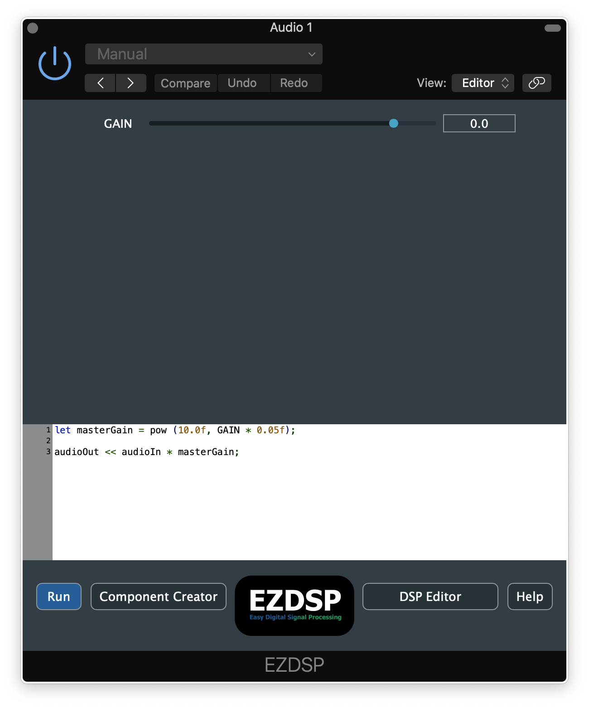
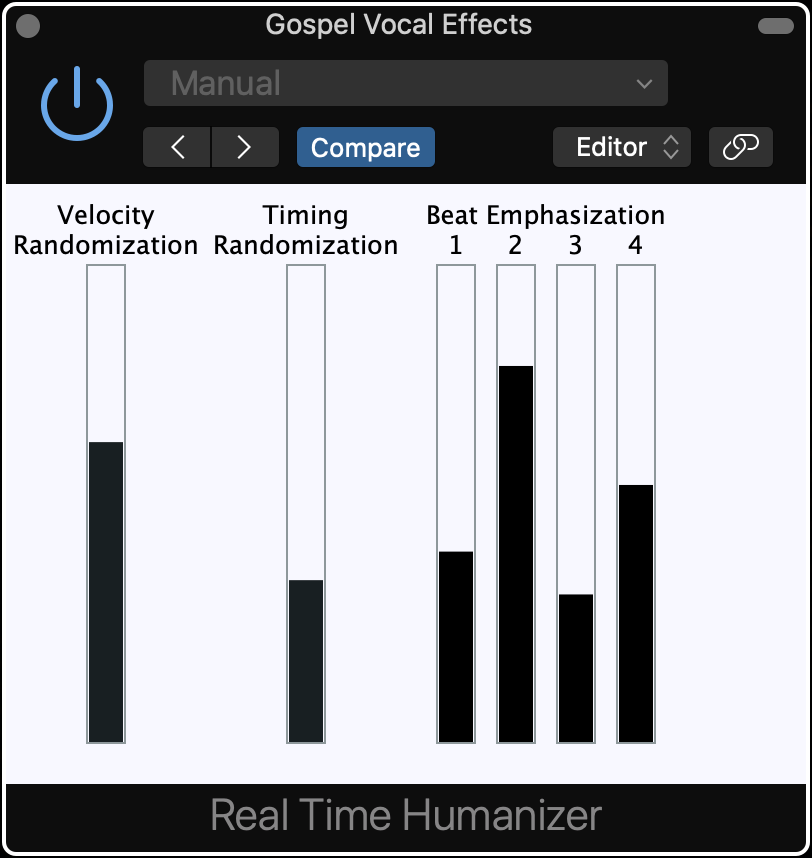

"Squatch Sounds is an audio software company founded by Garrett Eckl. Focused on innovation and accessibility, Squatch Sounds software includes cutting edge DSP programs, workflow tools, and educational software."
EZDSP

EZDSP is an audio plug-in that lets you edit the plug-in’s DSP source code from directly within your favorite DAW.
Download
AU
VST3
Real Time Humanizer

Randomize the timing and velocities of your MIDI notes in real-time, or add beat emphasization. This plug-in allows you to customize MIDI performances without permanently modifying the MIDI file.
Download
AU
VST3